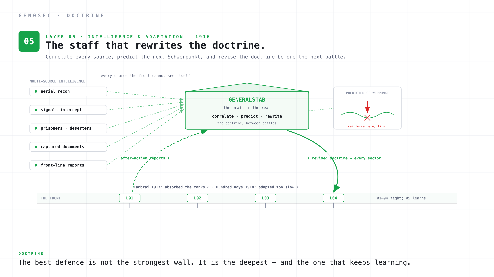
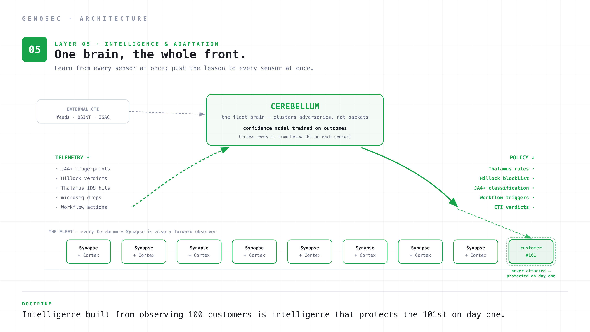
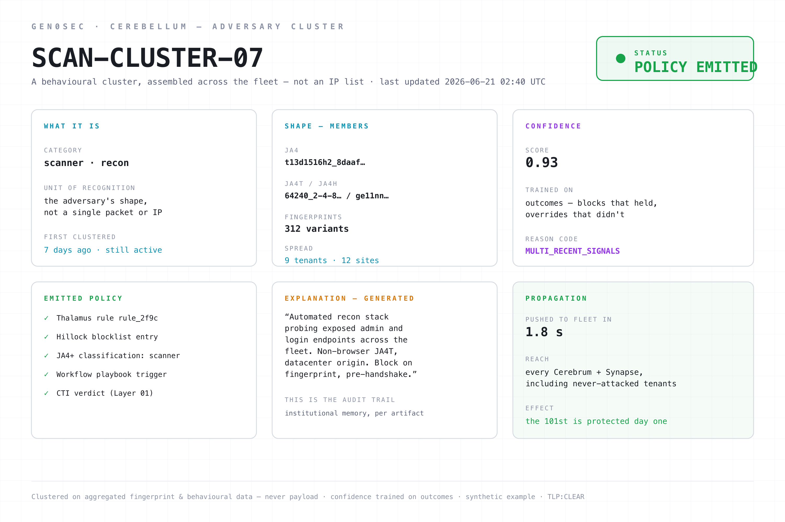

The Generalstab and the modern ML loop: why static doctrines lose to adaptive adversaries, and what it means to learn at machine speed.
The German Generalstab was the institution that designed elastic defense in the first place. They were not a battlefield zone. They were the brain that planned, observed, learned, and rewrote the doctrine as the war taught them what worked.
The staff was an unusual institution by 1916 standards. Most armies of the era had general staffs, but most were administrative. The German Generalstab was operational. Its members were trained in a specific intellectual tradition that began with Moltke the Elder in the 1860s, was systematised by Schlieffen at the turn of the century, and was running the war on the German side by the time elastic defense emerged. The staff officers rotated between front-line commands and analytical desk work, so the people writing doctrine had recently been the people implementing it.
The job of the Generalstab was to do five things continuously. Map the whole front, at a level above any individual sector commander. Correlate intelligence from sources the front-line units could not see: aerial reconnaissance, signals intercepts, prisoner interrogations, captured documents, agent reports, deserters. Predict the next Schwerpunkt the enemy would attempt. Plan the operations that would meet or pre-empt it. Rewrite the doctrine when the previous one stopped working.
The fifth point is the load-bearing one. Doctrine that does not update against contact with reality is doctrine that loses to a competent adversary. The British and French were learning too. Tanks, creeping barrages, combined-arms infantry tactics, the rolling-fire artillery model: these were innovations the Allied side made during the war. The Generalstab's job was to recognise the innovation, understand its implications for elastic defense, and modify the doctrine before the next battle. Sometimes they succeeded. When they did, like at Cambrai in late 1917, the elastic defense doctrine absorbed and counterattacked the first British tank-led offensive. When they failed, like during the Allied Hundred Days Offensive of August to November 1918, the doctrine broke down against combined-arms tactics it could not adapt to fast enough.
The asymmetry between those two outcomes is the whole lesson. The same doctrine, the same army, the same staff — and the difference between absorbing the attack and being overrun was the speed of the learning cycle relative to the adversary's. Cambrai was a case where the staff understood the new threat (massed armour) and revised faster than the British could exploit. The Hundred Days was a case where the adversary's rate of innovation finally outran the staff's rate of adaptation. Neither battle was decided by the strength of the wall. Both were decided by who learned faster.
The Generalstab was not a layer of the battle. It was the institution that designed the layers, and the institution that kept learning.
A century later, the closest network-defense analogue is the machine learning layer.

Layer 05 is the layer that learns from everything the other four layers see, predicts what the adversary will do next, and turns those predictions into policy that the other four layers can enforce. The components are machine learning, but more importantly they are feedback loops.
Most security teams already have some of these in place. EDR vendors with cloud-side anomaly detection. SIEM platforms with built-in analytics. Threat hunting teams that look at historical data to find patterns. UEBA tools that profile user behaviour. Some of these are useful. None of them are sufficient on their own. The doctrinal problem is that the learning happens in isolation from the enforcement, and the lessons reach the line slowly or not at all.
A useful Layer 05 has five properties.
It consumes everything the line produces. Every block from Layer 02, every IDS hit from Layer 03, every microseg drop, every approved response from Layer 04. The full telemetry stream, not just the alerts. Volume matters here, because the rare interesting signal is usually buried in a lot of ordinary traffic, and the only way to find it is to have all the traffic available for analysis. Telemetry is the training data of the Generalstab.
It clusters adversary behaviour, not events. A single port scan is an event. The same scanning fingerprint across 40 customers over six weeks is a campaign. The clustering question is "what is the adversary doing", not "what just happened on this host". A system that aggregates the whole fleet is good at this, because the inference happens across every deployment at once, not within the bounds of a single host. Adversary infrastructure has shape. The shape is what you want to find.
It produces policy, not reports. This is the doctrinal hinge. The output of Layer 05 is a Thalamus rule, a Hillock policy, a confidence-score adjustment, a Workflow playbook trigger. It is not a slide deck. It is not a quarterly threat assessment. It is enforcement that lands in the line at machine speed. The Generalstab wrote doctrine that ended up in unit training manuals. The modern equivalent writes rules that end up in eBPF.
It closes the loop. Every block, every approval, every counterattack outcome is fed back as training data. Did the block prevent further activity? Did the analyst override the recommendation, and were they right? Did the new rule produce false positives in the next 48 hours? These are not metrics. They are training signals. The learning is continuous, not project-based.
It runs at the right time horizon. Layer 02 makes decisions in microseconds. Layer 03 in milliseconds. Layer 04 in seconds-to-minutes. Layer 05 in minutes-to-hours, sometimes days for the slower clustering work. The Generalstab was not making minute-by-minute decisions. They were making weekly doctrinal decisions that compounded into the next battle. The ML layer is the same. Static rules that update once per release are the wrong tempo. Real-time inference on every packet is also the wrong tempo. The right tempo is fast enough that this morning's novel attacker fingerprint becomes tonight's Thalamus rule, and slow enough that the inference can use enough context to be confident.
There are two failure modes worth naming.
The first is the dashboard trap. An ML system that produces "insights" instead of policy is a dashboard. Dashboards lose to adaptive adversaries because the insight has to be read by a human, who then has to decide what to do, who then has to coordinate with someone else, who then has to push a change. By the time the change lands the adversary has moved. Insights are slower than enforcement.
The second is the over-confidence trap. ML systems that produce automated actions without a confidence model produce false positives at scale. The right design is to gate every action on a confidence score that is itself trained on outcome data. High confidence: auto-execute. Medium confidence: stage for human review with a recommended action. Low confidence: enrich the case but do not act. The confidence model is part of the doctrine. It is what makes the difference between "the staff has good intelligence" and "the staff is making things up."
Cerebellum is the backend platform, and it is where the Generalstab analogy actually lands. It is the operational brain that sees every sensor at once.

Cerebellum aggregates the full estate. Every Cerebrum sensor and every Synapse agent ships flow metadata, JA4+ fingerprints, Hillock verdicts, Thalamus hits, microseg drops, and Workflow actions back to Cerebellum. The data is normalised and timestamped on ingest. Customer-specific data stays customer-isolated; cross-site learning happens on aggregated fingerprint and behavioural data, never on payload. This is also where external CTI is ingested and aggregated, so the threat picture combines what the fleet sees with what the rest of the world is reporting. The training corpus is large by design.
Cortex feeds it from below. Cortex is the ML layer inside Synapse. It runs on each sensor, does local pattern recognition and anomaly detection on the traffic that sensor actually sees, and ships its findings up to Cerebellum. In the Generalstab analogy, Cortex is the divisional intelligence officer: close to the fighting, good at reading the local situation, reporting up. Cerebellum is the staff that aggregates every such report into one operational picture. Neither replaces the other, and Cortex never touches the CTI pipeline directly.
Cerebellum clusters adversaries, not packets. Its models are tuned to find the shape of attacker infrastructure across the fleet. A novel JA4 fingerprint that appears in three customer environments inside 24 hours is a cluster. A JA4T that matches a known scanner OUI combined with anomalous TLS extension ordering is a cluster. A behavioural pattern in HTTP request shape that correlates with a known botnet C2 is a cluster. The cluster is the unit of recognition. Once a cluster crosses a confidence threshold, Cerebellum emits policy.
Policy lands in the line. A new Thalamus rule, a new Hillock blocklist entry, a new JA4+ classification, a new Workflow playbook trigger, a CTI verdict. All of these can be generated by Cerebellum and pushed to the fleet automatically. The path from "Cerebellum sees a new pattern" to "every Cerebrum in production is enforcing it" is bounded by the inference cycle and the policy propagation latency, both of which are seconds.
Confidence is a first-class output. Every Cerebellum-generated policy carries a confidence score. The score determines what the rest of the stack does with it. High confidence triggers auto-enforcement. Medium confidence is staged for Workflow to recommend to the SOC. Low confidence enriches the existing telemetry but does not act. Confidence is trained on outcomes: if Workflow rolls back a high-confidence block within 24 hours because the SOC overrode it, that feeds back into Cerebellum's calibration.
It writes the docs of the future. The same models that generate Thalamus rules also generate the natural-language explanation of what each rule is for, what telemetry triggered it, and what kind of adversary it targets. Customers see this as the audit trail behind every block. We see it as institutional memory: a written record of what the stack learned, attached to every artifact it produces.
Customer learning compounds. Every customer is also a sensor. Every Cerebrum deployed in production is also a forward observer feeding Cerebellum. The intelligence built from observing 100 customers is intelligence that protects the 101st on day one. This is the Generalstab effect: a single backend that learns from the whole front and pushes the lessons down to every sector.
Layer 01 showed you a verdict: a single scored, time-bounded judgement about one indicator, ready for the line to enforce. That verdict did not appear from nowhere. It was drawn from a cluster — the fleet-level object Cerebellum builds when it recognises the shape of an adversary across many sensors at once. The verdict is the leaf. The cluster is the tree.
A list-based threat-intel product cannot show you the tree, because it does not have one. It has rows. Cerebellum's unit of recognition is the cluster, and the cluster is what carries the confidence, the spread, the emitted policy, and the explanation. Here is one.

Walk the panels, because each one is a property the Generalstab was supposed to have.
It is a behavioural cluster, not an IP list. The category is scanner · recon, and the unit of recognition is the adversary's shape — not a packet, not an address. Addresses are disposable; the stack that builds the connection is not. This is the difference between recognising a uniform and memorising a list of names. The cluster recognises the uniform, which is why it still works when the attacker changes address.
The shape is many fingerprints across many sensors. The cluster spans a JA4, a JA4T, a JA4H, 312 fingerprint variants, observed across nine tenants and twelve sites. No single customer saw enough to call this a campaign. The fleet did. This is the property a single-host tool structurally cannot have: the inference happens across every deployment at once, so the campaign becomes visible at a level no sector commander could reach.
The confidence is trained on outcomes, not asserted. The score is 0.93, and what makes it trustworthy is not the number but its provenance: it is calibrated on blocks that held and overrides that did not. The MULTI_RECENT_SIGNALS reason code says the score rests on multiple, recent, corroborating observations. A confidence model that learns from whether its past verdicts were right is the difference between a staff with good intelligence and a staff making things up.
The emitted policy is the whole point. One cluster produces five enforcement artifacts: a Thalamus rule, a Hillock blocklist entry, a JA4+ classification, a Workflow playbook trigger, and a Layer 01 CTI verdict. This is the doctrinal hinge made concrete — the output is not a report about the adversary, it is the set of rules that turn the rest of the stack against it. The cluster is recognised once and enforced everywhere.
The explanation is institutional memory. Cerebellum generates the natural-language account of what the cluster is, what it targets, and why it should be blocked — attached to every artifact it produces. The customer reads it as the audit trail behind a block. We read it as the staff's written record of what it learned, so the next person to look does not have to re-derive it. This is the Generalstab keeping its notebooks, at machine speed.
Propagation is what makes it a defence and not a study. The policy reaches every Cerebrum and Synapse in under two seconds, including tenants that have never seen this adversary. That last clause is the Generalstab effect in one line: the 101st customer is protected on day one, because the lesson the fleet learned from the first hundred arrives before the attacker does.
That is the difference between a threat feed and an adaptive defence. A feed hands you rows and lets you sort out what they mean. Cerebellum recognises the adversary's shape across the whole front, scores it on its own track record, turns it into enforcement in five places at once, writes down why, and pushes it everywhere before the next sector is hit.
The doctrine isn't new. The technology changes every five years. The doctrine doesn't. Layer 05 is what makes the other four get better over time. Without it, every breach is a one-off. With it, every breach is training data.
In 1916 the Generalstab figured out that the best defence is not the strongest wall. It's the deepest one. Cerebellum, fed by Cortex at every sensor, is what makes sure that lesson keeps applying as the technology and the adversary keep changing.
This is the final part of a 5-part series on elastic network defense. Swap the technology, keep the invariants: forward observation, an attritional edge, depth in the main zone, fresh reserves, and a staff that never stops learning. Reach us if you want the doctrine applied to your stack: gen0sec.com.
TLP:CLEAR — approved for public distribution.